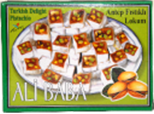

125 gr. Antep Fıstıklı Lokum
125 gr. ANTEP FISTIKLI LOKUM
Ürün Kodu: SWT 2001
Ürün Tanımı: Antep Fıstıklı Lokum
Ürün Ağırlığı: 125 gr
Koli içi adeti: 12
Paletteki Koli Miktarı (80x120): 168
Konteyner Kapasitesi (20 ft): 1848 koli
Konteyner Kapasitesi (40 ft): 3696 koli
Koli Ölçüleri (En - Boy - Yükseklik): 24x17x18
Raf Ömrü: 24 ay
Koli Net ağırlığı (gr): 5.28
Koli Brüt Ağırlığı (gr): 5.82
LOKUM ÇEŞİTLERİ